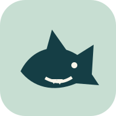

Von mir. Für mich.
Hi Sharks ist meine persönliche Bitte um finanzielle Unterstützung. Freiwillig und mit einem Augenzwinkern.

HI SHARKSEine persönliche Bitte.AN ALLE MIT GROSSEM PORTEMONNAIE UND GUTEM HERZEN
Millionär? Milliardär? Oder einfach spendabel? Ich frage dich ganz direkt: Hast du Lust, mich freiwillig zu unterstützen?
Eine Zahlungsmöglichkeit ist noch nicht eingerichtet.
Hi Sharks ist meine persönliche Bitte um finanzielle Unterstützung. Freiwillig und mit einem Augenzwinkern.
Ob du etwas gibst, meine Bitte weiterteilst oder einfach vorbeischaust, liegt ganz bei dir.
Ein konkretes Finanzierungsziel und bestätigte Zahlungseingänge sind noch nicht hinterlegt.
DIE KLEINE BITTE FÜR GROSSE FISCHE
Formuliere einen einzelnen persönlichen Entwurf. Kopieren und Teilen löst hier keinen automatischen Versand aus.
Eine Oberfläche für Browser, Handy und Tablet. Unterstützte Browser können sie über ihr Menü zum Startbildschirm hinzufügen.
Lokale Web-App wird vorbereitet.